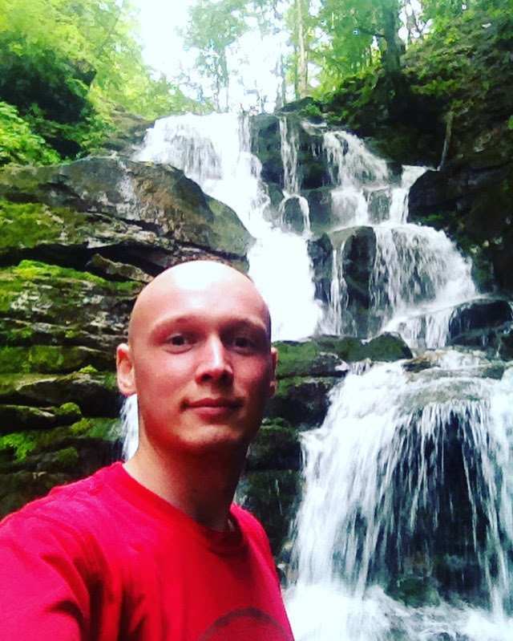

- Name: Petro
- Surname: Shevchyshen
- Date of birth:01.02.1995 р.н
- Place of birth:Ukraine, Vinnitsa
- Nationality:Ukrainian
- Email: Shevchyshen@gmail.com
- Phone: +380686779949
- Address: Vinnytsia, Ave. Unity 53/16
Contacts
- Ukrainian
- Russian
- English (pre intermediate)